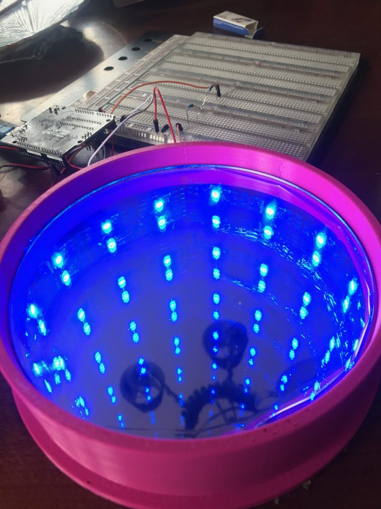

Infinity Mirrors and More
An infinity mirror is a cool visual effect where you can make a small disk look like an infinite tunnel. We can achieve this taking advantage of the fact that a transparent but reflective surface (a so called ‘2 way mirror’) between a dark and a well lit space will appear transparent on the dark side, but behave like a mirror on the lit one. By having a string of lights in an enclosed space between a mirror and a 2 way mirror, much of the light will bounce between the two surfaces before escaping out the 2 way mirror, which to an onlooker generates the effect of a long tunnel. I decided to make one of these at the WXML, using the 3d printing and laser cutting capabilities, while having a workshop on how to use the technology. A tutorial can be found here. A similar construction formed the centerpiece of an art peice I worked on as well.
Inspired by work by Diana Davis, Samuel Lelièvre, and others (including the amazing Yayoi Kusama), I became interested into making a room out of a similar philosophy. In particular, this could give tangible ways to observe so called billiards problems from dynamics which study paths of straight lines bouncing off of walls in rooms of various shapes. Here is an initial prototype.

I also have a short video which illustrates the effect of a large space squeezed into a tiny room. I'd be interested in scaling this up and exploring different shaped rooms, but I have yet to find the time or resources. Any takers?